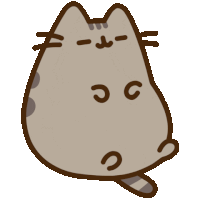
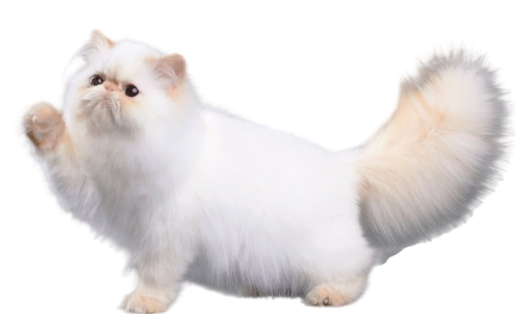
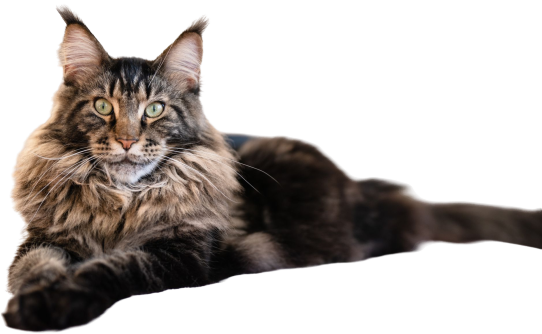
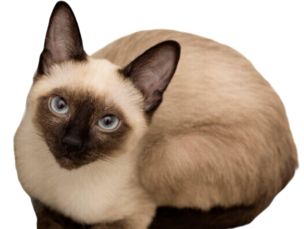
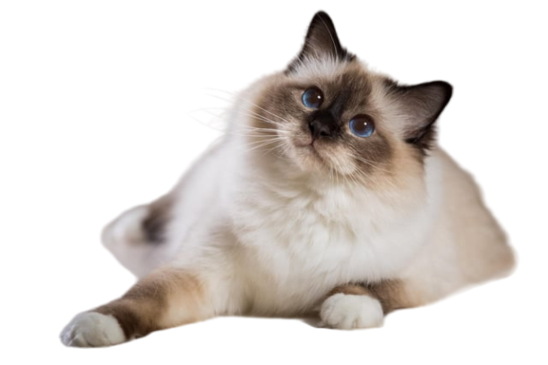
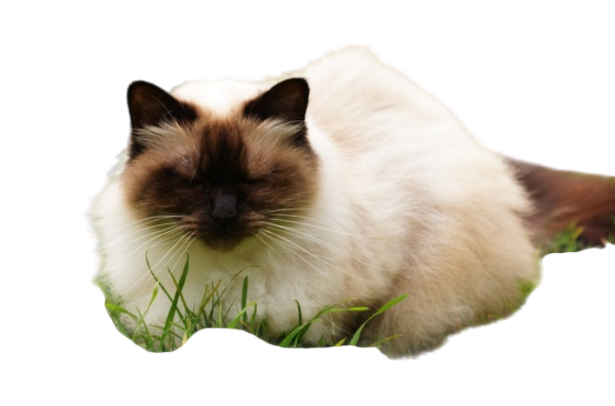

Cats have playful personalities... (Clean up the cat's mess)
Cats exhibit a variety of behaviors such as grooming, purring, and kneading to show contentment. They may scratch objects to mark territory and play to exercise and hone their hunting skills. Cats are also known for their independence and curiosity.

Cat Breeds
Persian
Persian cats have long, luxurious coats and distinctive flat faces, exuding elegance. They are known for their calm, gentle demeanor and affectionate, laid-back personality.

Cat Breeds
Maine Coon
Maine Coon cats are large, fluffy, and have tufted ears with a friendly, playful, and sociable personality. They are intelligent, enjoy human companionship, and often get along well with other pets.

Cat Breeds
Siamese
Siamese cats are sleek with striking blue almond-shaped eyes and a short coat featuring color points. They are vocal, affectionate, and social, often forming strong bonds with their human companions.

Mixed Cat Breeds
Siamese Mainecoon Mix
Siamese Maine Coon Mix cats combine the sleek, pointed features of the Siamese with the large, fluffy build of the Maine Coon. They typically have a friendly, social personality, being both intelligent and affectionate, making them excellent companions.

Mixed Cat Breeds
Siamese Persian Mix
Siamese Persian Mix cats blend the Siamese's sleek body and color points with the Persian's long, luxurious coat. They are typically affectionate, social, and enjoy human interaction, often combining the Siamese's vocal nature with the Persian's calm demeanor.

Mixed Cat Breeds
Mainecoon Persian Mix
Maine Coon Persian Mix cats feature a blend of the Maine Coon's large, robust build and tufted ears with the Persian's long, silky coat. They tend to be gentle, affectionate, and sociable, enjoying both playtime and relaxation, making them excellent family pets.